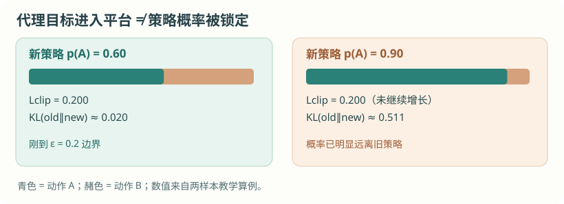

Understanding PPO
为什么同一批经验可以多次更新，却不能毫无节制地改写策略？从一次太激进的选择，推导 clipped surrogate 的每一个符号。
01 · 一个容易「学过头」的动作
假设机器人仅在一次试验里，向左绕行成功。我们当然希望提高这种动作的概率；但如果看见一次成功就把它从 20% 推到 99%，换个场景可能立即失败。一次经验能告诉我们方向，却不代表允许无限幅度地改变决策方式。
普通 on-policy 策略梯度会交替做两件事：当前策略与环境交互；用收集到的轨迹更新参数。直接在同一批轨迹上反复更新时，策略越新、数据分布却越旧，大更新就容易失控。Schulman 等（2017）提出的 PPO 正是要让我们在每批数据上做多轮 mini-batch 优化，同时保留「不应离采样策略太远」的机制。
02 · 从策略梯度推导学习信号
用 sₜ 表示状态、aₜ 表示从随机策略 πθ(a|s) 采样的动作，奖励为 rₜ。价值函数 V(s) 估计在该状态下继续行动的预期回报，而优势 Âₜ 衡量选中动作相对这个基线更好还是更差。
Âₜ > 0 时，鼓励该动作；Âₜ < 0 时，压低该动作。问题在于：方向是对的，不代表步长永远安全。当我们在一批已采样的数据上重复很多次梯度更新，状态-动作分布可能逐渐偏离真实采样分布。
03 · 从 TRPO 的信任域，到 PPO 的一阶替代
TRPO 用目标与约束分开的方式处理偏移：在优化代理收益的同时，要求新旧策略的平均 KL 不超过 δ（原论文 Eq. (3)–(4)）。这会引入较复杂的近似求解；PPO 希望借助常见一阶优化器取得类似的实践稳定性。
论文实际提出的是一族算法：一条路线直接对 KL 加 penalty（PPO-Penalty）；另一条路线通过 clip 构造较保守的代理目标（PPO-Clip）。下面重点拆解后者。它们不是同一条公式的两种写法。
04 · 为什么要保存「旧策略概率」？
轨迹由固定的采样策略 πold 产生。更新时旧概率保持不变，分子换成正在训练的当前策略，从而用一个比例衡量「针对这个已采样动作，概率被改成了多少倍」。
当前概率等于采样时的旧概率。每轮优化开始时，它应大致从这里出发。
新概率是旧概率的 1.5 倍，表示相对增加 50%，而不是增加 50 个百分点。
如果直接最大化 LCPI = Ê[rₜ Âₜ]，每个正优势动作随着 r 增大就能不断得到更大的奖励；正是这种无节制的激励，促使作者设计裁剪目标（Eq. (6)）。
05 · 为何是 min(原值, 裁剪值)？
核心式子是 PPO-Clip（原文 §3, Eq. (7)）：先在每个样本上取两个项中更小的值，再对样本求均值。
当 Â > 0，我们希望新策略提高这个动作的概率。r 超过 1+ε 后，min 选择封顶项；超过边界的进一步增加不再带来额外收益。若 Â < 0，我们希望压低概率；r 跌破 1−ε 后，进一步减少也不再加分。
Lₜ = min(r, 1+ε)·Â。它在上边界进入平台。
Lₜ = max(r, 1−ε)·Â。它在下边界进入平台。
为什么不只算 clip(r)·Â？因为更新如果走向「让坏动作更常出现」的错误方向，单独 clip 可能掩盖继续恶化的代价；取 min 会保留更差的未裁剪项。请注意：clip 对有利方向形成上限，并不等于把所有梯度归零。一个 batch 包含很多样本，参数也会相互影响，所以不能据此断言 KL 一定受限。
06 · 三组手算：亲自验证 min 的作用
固定 ε = 0.2。点击三个小实验，观察同一公式在不同符号、概率比下的结果。仅计算单个样本，不执行任何模型训练。
交互计算器：Lₜ = min(rÂ, clip(r)Â)
特别关注第三个按钮：负优势下 r=1.5，把一个差动作变得更可能发生，未裁剪项为 −3，裁剪项为 −2.4。min 仍选择 −3，因此不会把这类有害改变「截断到安全」。
多走几步：目标不再增加，KL 却还在增长
假设同一状态只有 A、B 两个动作，旧策略各 50%，一批教学样本分别包含 A（Â=+1）、B（Â=−1）各一条。令新策略 A 的概率为 p、B 为 1−p；ε 固定为 0.2。我们比较两个样本的平均 clipped surrogate 与 KL(old∥new)，后者只是衡量策略变化的一个指标，并非裁剪目标强制的硬约束。

动作 A 90.0% / 动作 B 10.0%。
rA = 1.80，rB = 0.20；平均 Lclip = 0.200；KL(old∥new) = 0.511 nats。
拖动滑块或用方向键调整。若 p(A) 超过 0.60，本例的 Lclip 已进入平台，但 KL 仍增长。这里只分析一个固定教学批次，不声称 PPO 的实际训练轨迹必然如此；实际训练需另监控 KL 等诊断量。
07 · PPO 还需要回答：这个动作到底好不好？
Clipping 只处理更新幅度带来的激励，无法替我们判断优势的正负。原论文 §5 Eq. (11)–(12) 给出了截断版 GAE（Generalized Advantage Estimation）的用法，可追溯到 Schulman 等人的 GAE 论文。
GAE 将未来数步的 TD residual 依权重反馈到较早动作，可通过从后往前的递推高效计算。但 Critic 预测不准确会污染 Â，奖励尺度或 episode/timeout 边界处理错误也会影响 PPO。它不是「只需要一个 clip 就能训练」的算法。
08 · 把 Actor–Critic 与多轮训练接起来
Actor 输出策略概率，Critic 估计状态价值。原文 Algorithm 1 在每轮采 N 个并行 actor、每个 T 个时间步的数据后，计算优势，随后分 K 个 epoch 以 mini-batch 优化 surrogate。原文 Eq. (9) 还展示了包含 value loss 与 entropy bonus 的联合训练目标。
用 π_old 采样，保存状态、动作、奖励、old log-prob、done 信息。
估计 V、returns 与 Â；整个当前数据批次的 old log-prob 与优势应保持对应。
K 轮 mini-batch 更新：新 log-prob → r → Lclip；同时拟合 V 与可选熵目标。
用 approximate KL、clipfrac、entropy 与 value loss 监控偏移；完成后再采新轨迹。
OpenAI Spinning Up 的 PyTorch 实现还用 KL 近似指标触发早停，这是一项工程防护，不是 Eq. (7) 的数学硬保证。
09 · PPO-Penalty：相似目标，不同机制
原论文 §4 Eq. (8) 的另一条路线在 surrogate 中加入相对旧策略的 KL 惩罚：
改写单项 clipped surrogate 的收益曲线；不包含硬 KL 约束。
通过 KL 成本抑制过大分布偏离；目标系数需要调节。
论文在其 §6.1 设定下发现裁剪型目标表现较好。原文 Figure 2 是一次 Hopper-v1 更新中代理目标与 KL 变化的诊断曲线，不能当成所有环境都单调改善的证明。
10 · 论文 Table 1：对比的是哪种分数？
作者在 7 个 MuJoCo 连续控制任务比较不同 surrogate：每个任务训练 100 万 timestep，每种设定在每个任务上运行 3 个 seed，取最后 100 个 episode 的平均总回报，经环境内归一化后汇总 21 个运行。下表是原论文 §6.1 Table 1 中的部分原始数值；不是测试集准确率，也不是本站复现实验。
| Surrogate 变体 | 平均归一化分数 ↑ |
|---|---|
| No clipping / penalty | −0.39 |
| Clip, ε = 0.1 | 0.76 |
| Clip, ε = 0.2 | 0.82 |
| Clip, ε = 0.3 | 0.70 |
| Adaptive KL, d_target = 0.01 | 0.74 |
| Fixed KL, β = 1 | 0.71 |
这个对照在同一组任务、计算预算与归一化协议下指出 ε = 0.2 的该项设定得分最高；不能据此断言它在一切环境或 LLM 训练中最佳。作者还在 §6.2 用 Figure 3 比较多个 MuJoCo 算法的学习曲线，并在 §6.4 报告 Atari 实验。本文没有训练这些模型，不声称复现了他们的曲线。
11 · 走向 LLM：PPO 的 old policy 不等于 RLHF 的 reference policy
对语言模型而言，可把状态看作 prompt 与已生成 token，动作看作下一个 token，策略就是条件分布。PPO 的 clipped ratio 比较当前更新策略与采样时的旧策略。在 RLHF 中，训练系统还常引入固定参考策略（例如 SFT checkpoint），在奖励里加入相对它的 KL 惩罚，限制模型对参考文本分布的漂移。
回答「本轮在固定 rollout 上是否更新过猛？」关联 PPO 的 r、clipfrac、approx KL。
回答「长期训练后是否远离参考模型？」关联 RLHF reward shaping 中的 reference KL。
TRL 的 PPO 指标文档分别记录 objective/kl（policy 对 reference）和 policy/approxkl_avg（相邻 PPO 策略）。这属于后来 LLM/RLHF 的应用和实现细节，不能误说成 2017 年原论文已研究了 LLM。
12 · 用最少代码验证正负优势的四种情形
仓库的 mini_ppo.py 只依赖 Python 标准库，运行 python mini_ppo.py 即可。它检验 clipping 在正、负优势下的不同分支，以及 terminal 时的 GAE 截断。这是数学单元测试，不是 PPO Agent，也不是论文 benchmark。
"""Tiny PPO objective/GAE mathematical checks. Standard library only."""
from math import isclose
def clipped_objective(ratio, advantage, eps=0.2):
if ratio <= 0 or not (0 < eps < 1):
raise ValueError("ratio must be positive; epsilon must be in (0,1)")
clipped = max(1 - eps, min(1 + eps, ratio))
return min(ratio * advantage, clipped * advantage)
def gae(rewards, values, terminals, gamma=0.99, lam=0.95):
"""values includes bootstrap V(s_T); terminal[t] marks a real episode end."""
if len(values) != len(rewards) + 1 or len(terminals) != len(rewards):
raise ValueError("length mismatch")
result = [0.0] * len(rewards)
running = 0.0
for t in range(len(rewards) - 1, -1, -1):
alive = 0.0 if terminals[t] else 1.0
delta = rewards[t] + gamma * alive * values[t+1] - values[t]
running = delta + gamma * lam * alive * running
result[t] = running
return result
def check():
assert isclose(clipped_objective(1.5, 2), 2.4)
assert isclose(clipped_objective(0.5, -2), -1.6)
assert isclose(clipped_objective(1.5, -2), -3.0)
assert isclose(clipped_objective(0.5, 2), 1.0)
assert gae([1.0], [0, 100], [True]) == [1.0]
assert gae([1.0, 2.0], [0, 0, 0], [False, True], 1, 1) == [3, 2]
print("PPO surrogate and GAE invariants passed")
if __name__ == "__main__":
check()
重点看 clipped_objective(1.5, -2) 的结果为 −3：如果省略最外层 min，就会错误地得到 −2.4。终止测试则用不应被读取的 bootstrap 值 100 检验 mask 是否有效。
13 · 训练中真正需要盯的边界
「所有策略变化都被限制在 ±20%。」不是。被截断的是优化目标中的部分激励，其他样本梯度仍可能推动策略越界。
「轨迹采一次，之后能无限训练。」不是。它仍是 on-policy；同一轮允许的 K 次复用与跨轮重新采样要区分。
「只要 policy loss 下降就训练成功。」不是。还要看 KL、clipfrac、优势统计、value loss、entropy、奖励与采样质量。
排查实践问题时，先确认旧 log-prob 与动作一一对应、GAE 的 terminated/truncated 定义正确、价值目标与优势来自相同轨迹，并对学习率、epoch 数、mini-batch 与奖励尺度做受控实验。Spinning Up 的 PyTorch 源码可以作为实现对照。
14 · 精读来源与复现边界
- Schulman, Wolski, Dhariwal, Radford & Klimov (2017), Proximal Policy Optimization Algorithms：§2–6；重点 Eq. (6)–(12)、Figure 1–3、Algorithm 1、Table 1。
- Schulman et al. (2015), High-Dimensional Continuous Control Using Generalized Advantage Estimation：GAE 的来源。
- OpenAI Spinning Up — PPO：KL early stopping、伪代码与训练接口（现代实现）。
- Hugging Face TRL PPO Trainer：LLM 场景中两种 KL 指标的区别（实现版本可能变化）。
本文 SVG、算例与代码独立制作；原始实验数值来自被标明的论文表格，未重新训练模型。读者可从 Figure 1 的分段函数开始重新手推公式，再对照 Table 1 的归一化和随机种子协议。